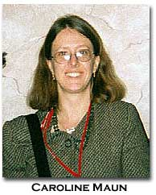

|
Evelyn Scot's Precipitations
Caroline
Maun
Like other modernist prose writers such as William Faulkner and Katherine Anne Porter, Evelyn Scott began her writing career as a poet.1 What is unusual in her case is that she continued to compose and publish poetry throughout her writing career, never relinquishing the idea of herself as a poet, never ceasing to include her poetry as an important part of what she represented as the body of her work——even though the majority of her energy and the subsequent recognition she received focused on her novels. Her self-understanding as a poet, her identity and practices as a poet, inform the whole of her artistic production because it is in her poetry that she first develops her characteristic individual consciousness, isolated from and opposed by the natural world, society, religion, and, in some important cases, her own self. This isolated self, who sees the world from the standpoint of an outsider, is a consistent figure or trope in her work in all of the genres. Not surprisingly, then, Scott’s identity as a poet was important to her from her literary debut in 1918 until the end of her career. Scott initiated her career as a poet by publishing "Moon Cycle," a group of poems she sent to New York from Brazil. This early appearance was followed by other poems in little magazines such as Others, Poetry, and The Dial in 1919 and 1920. These poems defined her as an Imagist whose primary subjects were subjectivity, sexuality, and the exotic Brazilian locales which catalyzed her writing from 1913 until 1919. Her Imagism, however, developed independently and in isolation from that of Ezra Pound, H. D., T. E. Hulme and others, since she began writing poetry while in Brazil, and it differed from theirs in important respects. Her first published book, Precipitations, which appeared in 1920, included these early published poems, yet broadened her scope significantly with the inclusion of many more poems about the city, race, sexual politics, and nature. Scott’s particular contribution to Imagism is that while she depended upon the evocative power of intensely realized imagery, she also used the imagery to provoke the emotional responses of her readers in ways that referred beyond the poems themselves. In fact, her project primarily centered on emotional play, rather than pure images, which brings her closer to the expressionist mode. Open forms, influenced by the work of D. H. Lawrence and William Carlos Williams, provided her with the freedom to experiment. When rhyme and rhythm appear in this early poetry, it is toward specific effects of juxtaposition rather than establishing form for form’s sake. Early reviewers of Precipitations situated Scott as a modern poet. Padriac Colum in The New Republic stated that Scott "takes us to a place where there are no shared possessions and where there are no springs of action" (305). He associates the isolation and experimentation in the poetry directly with "territory that the moderns have opened up" (305), although he also thought this territory more fruitful for novelists. The detachment with which a riot is described in her poetry, for example, in graphic detail and with concentrated accuracy, but without any sense of action, establishes the detachment of the emotional voice. Rather than reflecting outrage, the distance of the persona in the poem allows Scott to represent a more objective voice. Mark Van Doren reviewed Precipitations for The Nation, describing Scott’s poetry as radical impressionism, and finding Scott apprehending new subjects in new ways: "At no time do the walls of tradition serve her, either as mirrors or as sounding boards." Lola Ridge, in reviewing Precipitations for Poetry, characterized Scott’s poetic voice as "like an electric ray, that seems to focus——almost lovingly——upon decay and death, with a child’s simplicity and eager response to every mood of earth" (334). She also places Scott as a modernist: "These poems show an astonishing and essentially modern awareness...it is a consciousness that, while close to and keenly aware of instinct, has yet obtained its release; so that it watches, intent but calmly elect" (336-37). Although Precipitations was not widely reviewed, the criticism following the volume shows attention to Scott’s place as a modernist, her use of imagery, and her concentration on death as a subject intertwined with fecundity and life.2 As the title of Scott’s first volume of poetry suggests, her early poetry functions in the mode of a precipitate, or condensation of thought and feeling for her. The poems are short, free verse; some are rhythmical, some are rhymed. They are frequently synesthetic and synesthetically paradoxical. The volume is arranged in six main sections entitled: "Manhattan," "Vanities," "Bruised Sunlight," "Contemporaries," "Brazil through a Mist," and "The Coming of Christ." Each of these main sections has two or three poem cycles, each with separate titles, and each cycle is composed of between four to sixteen short poems, also titled separately. This hierarchy of structure promotes an interweaving of themes throughout the volume, while also emphasizing continuity within the parts. The poetry cycle was a method of organization that Scott frequently used in the earliest of her published poetry. It seems to provide a combination of focused investigations through individual lyrics as well as opportunities for sustained development across poems or poem cycles. The poems in Precipitations have a broad surface scope, and they have subterranean commonalities as well. Broadly, they deal with Scott’s experience of Brazil, her transition to living in New York, the female body, physical pain, maternity, character studies and portraits of contemporaries, and evocations of mood. While they seldom represent their subjects in "harsh outline" but rather work by indirection, Scott nevertheless wrote vividly of the things she chose as her subjects. She dwells on color, light, and shape with precise detail, while allowing a blending of perceptions to inform the representations in the poems. Poems of all subjects share a doubling back on itself of the poet’s vision, which causes the blurring of the distinction between subject and object. In these poems, Scott also portrays forces which work against rational thought such as maternal instinct, mob violence, and narcissism as monstrous and threatening. Her primary critique of modern culture rests with her examination of forces and urges that thwart rational thought. Scott’s project in Precipitations is not only to capture sensual images but to reproduce specific experiences of perceiving the images, and to construct associations that unseat the reader. The anxiety these techniques produce seem to be one of Scott’s main goals in writing. The anxiety may serve to highlight certain philosophical or social dilemmas or contradictions which she chooses to focus on in a particular poem. In order to achieve these effects, the voice in her poems is frequently narcissistic to the point that the boundaries of self are often called into question. Added to this experimental voice in her poetry, Scott also interweaves, for the time, persistent and daring references to female eroticism, as well as focusing on what one might identify as the hideous in many of the poems. Scott was one of the earliest writers to recognize and exploit the socially constructed association between the female body and irrational thought. By exposing the link of the female body to irrationality and generating anxiety about it, Scott intends to force her readers into new ways of thinking about women. The natural world, also associated with the female body, is portrayed as indifferent both to the joy and suffering of the persona, although it evokes both emotional responses. In contrast, the city (specifically New York) becomes an adjunct of nature, both terrible for the mobs it is haven to and beautiful in its stony composure and implacability. Neither it, nor nature, it seems, will be altered by the boundless and frantic persona who cannot remove her eye from either beauty or ugliness but regards both with an equal share of fascination and wonder. In reading Scott’s poetry the reader is absorbed by the perspective of this persona and engulfed in the natural forces which seem to buffet her. A unifying theme in Precipitations is the isolation of the individual. The first section, entitled "Manhattan" and containing two poem cycles, "The Unpeopled City" and "Crowds," explores the paradoxes of isolation within a most populated place, New York City. In "The Unpeopled City," for instance, the poem "Midnight Worship: Brooklyn Bridge," the first poem of the volume, describes street lamps along the bridge as subjectively perceived saints whose nimbuses hover above as a trick of the light. The lamps have will and agency in the poem in contrast to the paralysis of the speaker. In a later poem of "The Unpeopled City," entitled "From Brooklyn," the persona describes the perceived floating of Manhattan across the river: "Dim gardens of fire— / And rushing invisible toward me through the fog, / A hurricane of faces." Other people, crowds in fact, pose a direct threat to her viability as an individual. Robert Welker, in his 1958 dissertation, described "From Brooklyn" as an example of purely Imagist verse, emphasizing the way in which the description exists for its own sake and doesn’t seem to reach out toward a larger web of meaning beyond itself.3 The persona perceives Manhattan as a unity floating across the river, but at the same time she is overwhelmed by the crowds that she knows the city contains. Faces, the vehicles of individuality, merge in a storm that overwhelms her. In the second poem cycle of "Manhattan," entitled "Crowds," Scott further examines the isolation of individuals and their control by natural urges within the framework of civilization. In a brief poem entitled "New York," Scott subjectivizes the landscape of New York to include natural images of destruction:
The city’s buildings are described as a herd of animals large enough to dwarf the individual human lives contained within. Scott’s use of the descriptive terms "diaphanous" and "velvet" depict sensual contradictions, a favorite device. The buildings are diaphanous because while seeming solid from a distance they are in fact hollow; perhaps the lives that are led in such buildings, lives of business and commerce, exert the velvet yet inexorable forces that press humanity back into the earth. Scott describes human beings as merely bodies, dwarfed and inconsequential——they may as well be ants, for all the individual significance they exert. The indifference of the city is further elaborated in this cycle in a poem entitled "Sunset: Battery Park" where the sunset, reflected from the windows of houses, turns the windows into eyes which gaze back at the persona in sightless, expressionless judgement. The sight lines "obliterate all they see" and Scott concludes the poem by describing the crowds below the buildings as contiguous, one being, melting "seaward and deathward" to the ocean like those not fully alive. They can’t recognize the landscape around them or the cost to themselves of following their blind urges. The persona is then a lone voice of protest among many who seem themselves to refrain from thinking and judgement. Life itself is described as a monster in the last poem of the "Crowds" cycle, "The City at Night." In a remarkable image, Scott describes life:
The unconscious, multiple will is a monstrous force which is made up of individuals and dominates their will to its own. In "City at Night" this is expressed in the image of life as wormlike, wriggling, and without mind. The individuals who travel in the night are described as subject to a will larger than their own. The monstrous quality seems to be due to a lack of specific intelligence or realized personality. "A passion without any master," in whatever form it takes in Scott’s poetry, is depicted as dangerous. Sexual fluid as acidic or as burning is both responsible for new life but is also a poisonous harbinger of the strife that new life may bring. The city represents a human hive-like existence which Scott contrasts to a terrible peace she knew in the isolation of the Brazilian ranch. In the next section of poetry, entitled "Vanities," Scott turns her attention to family relationships and Christian imagery. Three cycles, "Bread Poems," "The Red Cross," and "Domestic Canticle," explore family emotional dynamics interwoven with a strong critique of Christian values and doctrine. Scott also continues in this section her commitment to analyze irrationality. In these sections she finds that many familial relationships are based on irrational motives and thought. She pays particular attention to the maternal relationship. In "Embarkation of Cythera" Scott offers a brief poem of stasis and stagnation. Cythera is a Greek island historically associated with the goddess Aphrodite. "Embarkation of Cythera" then would be freight transported from Cythera by ship; Scott suggests that her own body is the cargo from this sensual point of departure. Sexual pleasure and death are distinctly linked in this poem. The libidinal knowledge of the persona’s boundaries are blurred in the warm stagnance of the bath. In the libidinal spaces the distinctions between inside and outside, usually easy to make, grow confusing. The water which penetrates the persona makes the sense of her particular self seem less definite. The climax of the poem, it is suggested, is a synchronous experience of orgasm and death. "Christian Luxuries," "Maternal Breast," and "The Shadow that Walks Alone" join "Embarkation of Cythera" in exploring the sensual experience of the female body. In "Christian Luxuries" Scott indicates that the luxury that Christians enjoy is the sense of sin. The feeling of sin is described as a delicious indulgence, a debauching of responsibility for one’s actions. Once again we find the persona in a bath, yet this time it is described as a red fountain of shame which generates from her heart. The fountain is simultaneously the natural flow of blood in veins as well as an explosive display of excess suggestive of menstruation. In an exercise in sensual paradox, Scott claims "the fire is cool. / It cannot burn me." Sensual paradox, or synesthetic paradox, is one of Scott’s anxiety producing poetic devices. By saying sin is a cool fire she indicates the central paradox of sin——it is felt both openly as pain and subterraneously as pleasure. In this poem she directs the reader’s attention to long held assumptions about sin and religious practice, with the intention of debunking them as self serving and hypocritical. The female body is an appropriate trope for this admixture of feeling in its experience of a monthly cycle beyond its own control, and the social stigma historically placed upon the menstrual cycle. In "The Maternal Breast" the persona experiences a deep desire for a maternal sanctuary. The mother, it is suggested, can be a location of refuge, a place. This poem is additionally interesting when one is aware of the deeply conflicted relationship Scott had with her mother, Maude Dunn. In Escapade, she shifted the roles of the principle parental figures to an aunt and uncle, which no doubt served, as she claimed, to protect the identities of her actual parents. but it may also have provided a crucial psychological distancing from her mother, who, disguised as an aunt, became a key figure in the narrative. In this poem, the persona seeks an ideal mother, a figure of plenty, like the statue of Diana of the Ephesians, with her many breasts. The quest for the ideal mother, who is a function of giving beyond all reason with no sense of her own self, goes unfulfilled for Scott in the poem. "I was looking for a hill of mounds hairy with grass / And a place to lie down." The closing of this poem suggests not only a return to the safety of a womb, but also a final resting place, a graveyard. In this double image, Scott suggest how impossible it would be for any individual to fulfill such a need. the "ideal" maternal breast she seeks can never be found. Evelyn Scott’s world in Precipitations is a haunted one—haunted not by ghosts, but by absence, a refusal of nature to provide coherent meanings to the one who seeks them, a failure of the individual to integrate into any possible context of self, family, community or world. Nature is mute with regard to meaning, mute yet at the same time brimming with puzzling spectacles of life that strongly seem to indicate…what? Marooned in this conundrum, frustrated in the attempt to find meaning in nature, Scott’s poetic personae frequently turn inward, focusing on their own isolated subjectivity defined by the stark fact of its being surrounded by a recalcitrant nature. The urge to wrest meaning from mute, mocking nature is obsessive—almost uncontrollable—so much so that this anthropomorphizing of natural objects shows nature in a willful and active refusal of the persona’s questioning: tree limbs grip, hills push, twigs grasp—but none communicate. Nature, endowed with will and intention, implicates the subjectivity of the persona, despite her objective recognition of her unavoidable subjectivity and individual bias. The tension between the intense isolation of the persona and the insistent yet inscrutable press of nature surrounding her is particularly keen when Scott’s poetry turns to a woman’s ambiguous role in the natural world as a mother, focusing on the contradictions between her individual will and the obscure imperatives that nature imposes on her. With cold, rational detachment she separates all necessary causal connections between maternal love and the "natural" act of giving birth. To give birth is not necessarily to be a mother—and to be a mother is not determined by nature which is known to be silent and impotent in asserting its will. If, as is the case in Precipitations, maternity is not determined and directed by nature, then it is not bounded by nature and subject to its norms. Instead maternity is determined by the poet, just as her perceptions of nature were directed by her poetic faculties. Although the subjectivity Scott projects in her poems is often confused about its identity or unsure of the status of its reality, it nonetheless always serves as the primary perceiver, the acknowledged perceiver, the frame through which what is seen is shaped. In the case of observing the natural world, this leads the persona to a heightened sense of isolation and purposelessness. In the case of maternity, it causes her to adopt an intensely personal and transgressive role. The poetic faculty in each case is given a position of unrivaled importance. The radical importance of the poetic faculty in shaping experience is a distinguishing characteristic of Scott’s work. However, Scott’s poetry does not posit any deliverance from the entanglements of subjectivity. Her silence on this subject is also unique. While she at times evinces frustration at the ineluctable paradoxes of life, there is also an erotic enjoyment of the fractile structures of experience. The "I," the thread of continuity, is constituted by the desiring self, desiring, often, and at crucial moments, primarily a surcease of desire.
Notes
1 William Faulkner, The Marble Faun, Boston: Four Seas, 1924; Darlene Harbour Unrue, editor, Katherine Anne Porter’s Poetry, Columbia: Univ. of South Carolina Press, 1996. [back to text] 2 Padriac Colum, "Two Women Poets," review of Precipitations, by Evelyn Scott, The New Republic 29 (November 2, 1921): 304-5; Mark Van Doren, "Sapphics," review of Precipitations, by Evelyn Scott, The Nation 112.2896 (January 5, 1921): 20; Lola Ridge, "Evelyn Scott: An Appreciation," review of Precipitations, by Evelyn Scott, Playboy, a Portfolio of Art and Satire 7(1921):24. [back to text] 3 Robert Welker, "Evelyn Scott: A Literary Biography" (Ph.D. diss., Vanderbilt University, 1958), 149. [back to text]
Note: A longer version of this paper, entitled "'The loneliness that sings': Evelyn Scott's Precipitations" will be published in Evelyn Scott: Recovering a Lost Modernist, edited by Dorothy Scura, forthcoming from University of Tennessee Press, Spring 2001 .
BIO: Caroline Maun is Assistant Professor of Composition and Rhetoric at Morgan State University in Baltimore, Maryland. She has published articles on Emily Dickinson, W. B. Yeats, and Evelyn Scott. She edited the Collected Poems of Evelyn Scott in the National Poetry Foundation's Phoenix Series, forthcoming in 2001.
go to this issue's table of contents
| |||||||||||||||